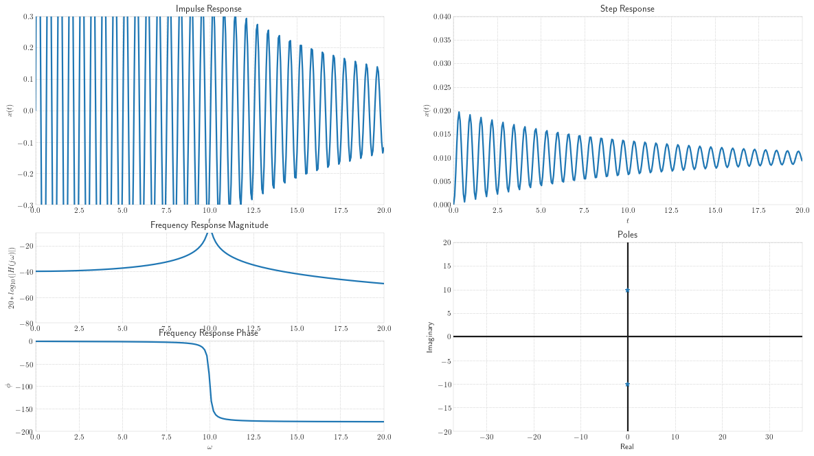
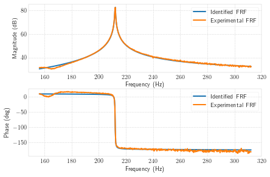
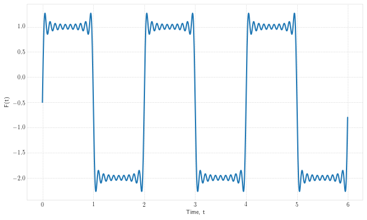

In [1]:
%load_ext autoreload
%autoreload 2
In [2]:
import vibration_toolbox as vtb
display(vtb.sdof_interact())
In [3]:
vtb.plot_sdof_resp()

zeta = 0.010, omega_n = 10.00
In [4]:
help(vtb.plot_sdof_resp)
Help on function plot_sdof_resp in module vibration_toolbox.sdof:
plot_sdof_resp(m=1.0, c=0.2, k=100.0)
Plot characteristic responses of SDOF system.
Plot impluse response, step response, frequency response function, and
location of poles.
Parameters
----------
m: float
Mass
c: float
Damping
k: float
Stiffness
In [5]:
display(vtb.sdof_interact())
In [6]:
help(vtb.sdof_cf)
Help on function sdof_cf in module vibration_toolbox.ema:
sdof_cf(f, TF, Fmin=None, Fmax=None)
Curve fit to a single degree of freedom FRF.
Only one peak may exist in the segment of the FRF passed to sdofcf. No
zeros may exist within this segment. If so, curve fitting becomes
unreliable.
If Fmin and Fmax are not entered, the first and last elements of TF are
used.
Parameters
----------
f: array
The frequency vector in Hz. Does not have to start at 0 Hz.
TF: array
The complex transfer function
Fmin: int
The minimum frequency to be used for curve fitting in the FRF
Fmax: int
The maximum frequency to be used for curve fitting in the FRF
Returns
-------
z: double
The damping ratio
nf: double
Natural frequency (Hz)
a: double
The numerator of the identified transfer functions
Plot of the FRF magnitude and phase.
Examples
--------
>>> # First we need to load the sampled data which is in a .mat file
>>> import vibration_toolbox as vtb
>>> import scipy.io as sio
>>> data = sio.loadmat(vtb.__path__[0] + '/data/case1.mat')
>>> #print(data)
>>> # Data is imported as arrays. Modify then to fit our function.
>>> TF = data['Hf_chan_2']
>>> f = data['Freq_domain']
>>> # Now we are able to call the function
>>> z, nf, a = vtb.sdof_cf(f,TF,500,1000)
>>> nf
212.092530551...
In [7]:
import vibration_toolbox as vtb
import scipy.io as sio
data = sio.loadmat(vtb.__path__[0] + '/data/case1.mat')
TF = data['Hf_chan_2']
f = data['Freq_domain']
In [11]:
z, nf, a = vtb.sdof_cf(f,TF,500,1000)

In [ ]:
TF.
In [13]:
bodd_square = lambda n: -3*(-1+(-1)**n)/n/np.pi
beven_square = lambda n: -3*(-1+(-1)**n)/n/np.pi
t, F = vtb.fourier_approximation(-1, 0, 0, bodd_square, beven_square, 20, 2)

In [ ]: